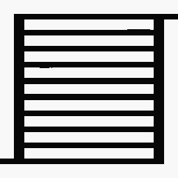
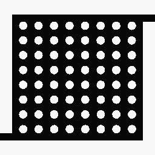
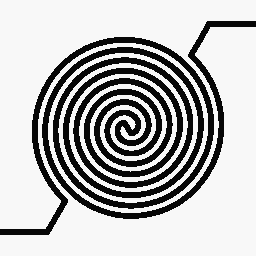
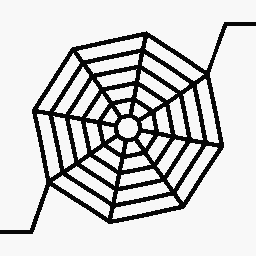

Build the SDF dataset
A 250-sample pilot is checked first. After release, 5,000 frozen SDFs are built for each of F0–F4: 25,000 training geometries in total.
Generative AI-based diversification of flow-channel designs for large-scale orbital data center radiators
Conditional diffusion pipeline
A 250-sample pilot is checked first. After release, 5,000 frozen SDFs are built for each of F0–F4: 25,000 training geometries in total.
A one-epoch smoke test precedes 50-epoch unified training. The family ID tells the same conditional diffusion model which channel grammar to learn.
The reverse process progressively removes noise and produces 256 native 256 × 256 RAW SDF samples for each family.
SDF > 0 becomes the fluid mask. Family-specific geometry gates report PASS or FAIL without projection or morphology; CFD/CHT remains a separate validation step.
Generation quality control
Five family conditions with 256 generated RAW SDF samples per family. Pass rates are reported before projection or geometry substitution.
209 / 256 RAW PASS

99.6%255 / 256 RAW PASS

100%256 / 256 RAW PASS

98.8%253 / 256 RAW PASS

97.3%249 / 256 RAW PASS
RAW model performance, conservative cleanup, and final release decisions are reported separately. Geometry validity is a pre-screening step—not a substitute for CFD/CHT validation.